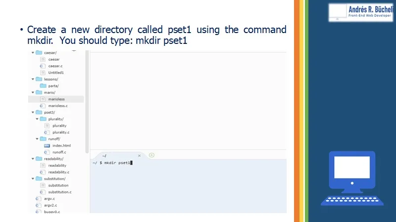
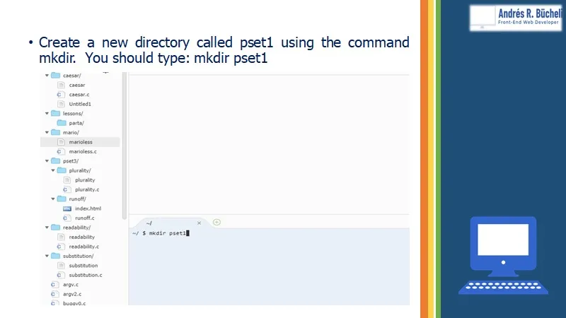

DON’T PANIC WITH CS50 IDE AND COMMAND LINE
Please help me, I can’t understand how this works!!! … … this is one of the most common messages found on collaborative platforms for programmers such as stackOverflow
Some aspiring computer science students, especially younger ones who were born and who were raised in a world with Windows and graphical interfaces, are feeling frustrated and sometimes totally discouraged by being exposed to technology that dates back to the beginnings of commercial computing and that has not become obsolete despite developments in other areas.
The command line, Bash applications and Virtual Machines are essential in server administration and telecommunications and the best thing to do is trying to learn how to use them as soon as possible because their use is less complicated than it seems, despite the fact that the word “Linux” causes many people to panic.
CS50 Introduction to Computer Science is the ultimate course for those who want to become top programmers and is the sensation in the world of online education in Computer Science.
CS50 not only teaches students how to think algorithmically and how to solve problems. The famous course not only provides students with the best methodologies for learning Computer Science, created by legendary professors like David J. Malan but from the very beginning of the course students are instructed in the use of tools that they will find throughout their growth as future software developers.
One of these tools is the Integrated Development Environment. This learning tool uses Amazon’s Cloud services to provide students around the world with a homogeneous and standardized platform, very similar to the dominant platforms on the market and exposes students from the beginning of the course to the use of the command line, which is a way of interacting with computers that have not become obsolete, despite the advent of graphical user interfaces.
The CS50IDE is very similar to development platforms such as Visual Code Studio, with a section for editing code, a section where you can find the terminal for typing the command line, and a menu where the files and folders are listed.
Although the command line is commonly used in the software development industry and in the telecommunications industry, it is not well known to the next generation of aspiring programmers, because its history dates back to the 1970s before the creation of Windows and other systems that made computers easier to use.
In this tutorial, I intend to clear up step by step some of the doubts that younger people may have regarding the use of this type of technology.

 
